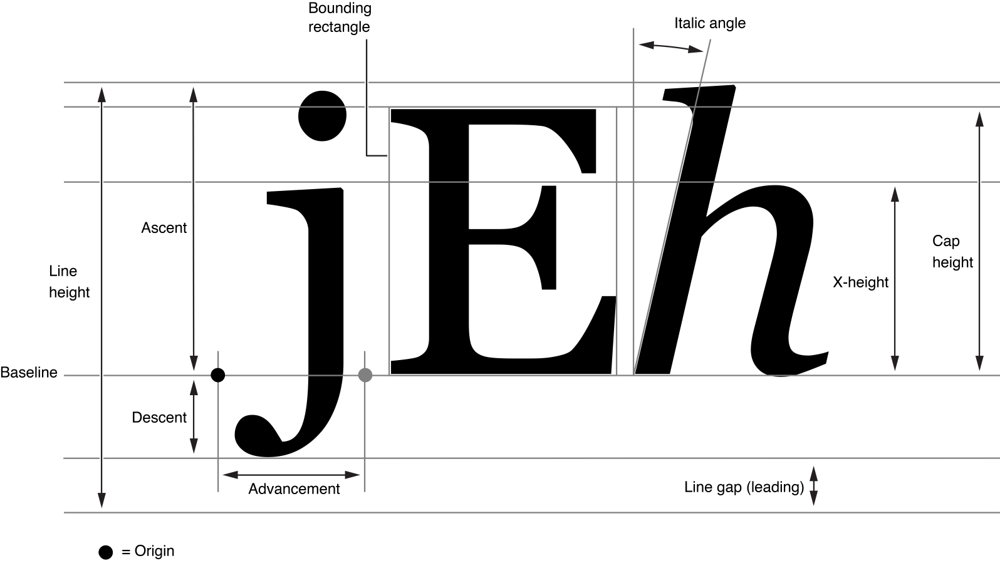

Bounding box
SVG has a concept of coordinates that are relative to object's bounding box.
This is used by gradients, patterns, clip paths, masks and filters.
And it can be useful when we don't know the exact bounding box beforehand.
For example, a text with a random font.
Filters even have a default region that is 10% bigger (in all directions)
than the object's bounding box. Which is handy for something like a blur filter.
For paths and images, a bounding box is pretty straightforward (note that the path's bounding box doesn't include stroke and markers). But what about text?
Let's say we have something as simple as:
<text x="100" y="60" font-family="Noto Sans" font-size="48" text-anchor="middle">Text</text>

What do you think is the bounding box of this text? Something like this (highlighted with a green rectangle)?

Nope! This is a path bounding box, not text bounding box.
To visualize the actual object's bounding box we can use a filter with relative coordinates, like so:
<filter id="filter1" x="0%" y="0%" width="100%" height="100%">
<feFlood flood-color="aquamarine"/>
</filter>
This filter will fill a region that equals the object's bounding box with an aquamarine color. And after applying it to our text we would get:

If you're familiar with a modern text layout you're probably not that surprised. But if you're not, here is a cool illustration from Apple's docs:

What we're interested in here is line height (the first vertical measure on the left).
Text layout width + line height is our text bounding box.
This is what should be used when objectBoundingBox property is defined.
And while Chrome, Firefox and Safari are all fine, Batik, Inkscape and librsvg will produce an incorrect output.
Leading and trailing spaces
By default, all leading and trailing spaces would be removed from a text element in SVG.
Unless we set xml:space to preserve.
And the spaces we have preserved do affect the bounding box as well.
For an SVG like:
<text x="100" y="60" text-anchor="middle" xml:space="preserve"> Text </text>
We would get:

Chrome, Firefox, Safari and Inkscape handle this correctly, but Batik and librsvg don't. What's even stranger is that Inkscape accounts for leading/trailing spaces, but not not line height, which we discussed above.
Zalgo
Previously, I've said that font's line height is our bounding box height. Well, this is only true for simple cases.
In a modern text layout a line doesn't technically have a height. Or rather a height limit. This may sound a bit surprising, but it's true. And a good illustration of this is Zalgo text.
Let's try rendering Te̶̗̯̪̺̋̓̍̾́xt using various SVG libraries:

Ugh... Welcome to the hell the SVG Text is.